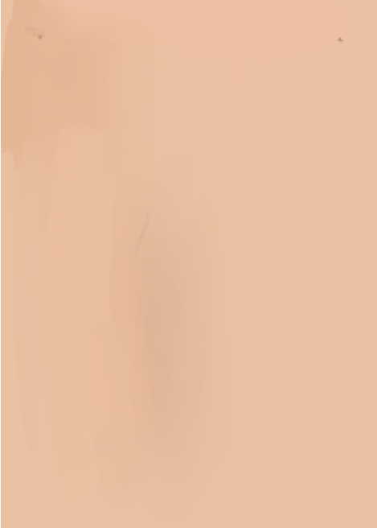
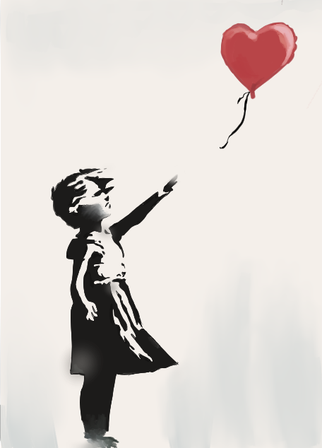
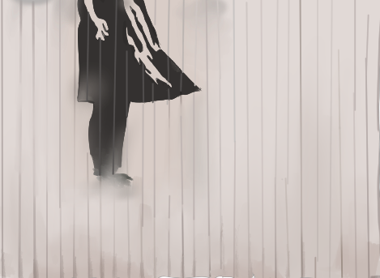

“Art should comfort the disturbed and disturb the comfortable.”
“There’s nothing more dangerous than someone who wants to make the world a better place.”
“Graffiti is one of the few tools you have if you have almost nothing. And even if you don’t come up with a picture to cure world poverty you can make someone smile while they’re having a piss.”
The urge to destroy is also a creative urge.